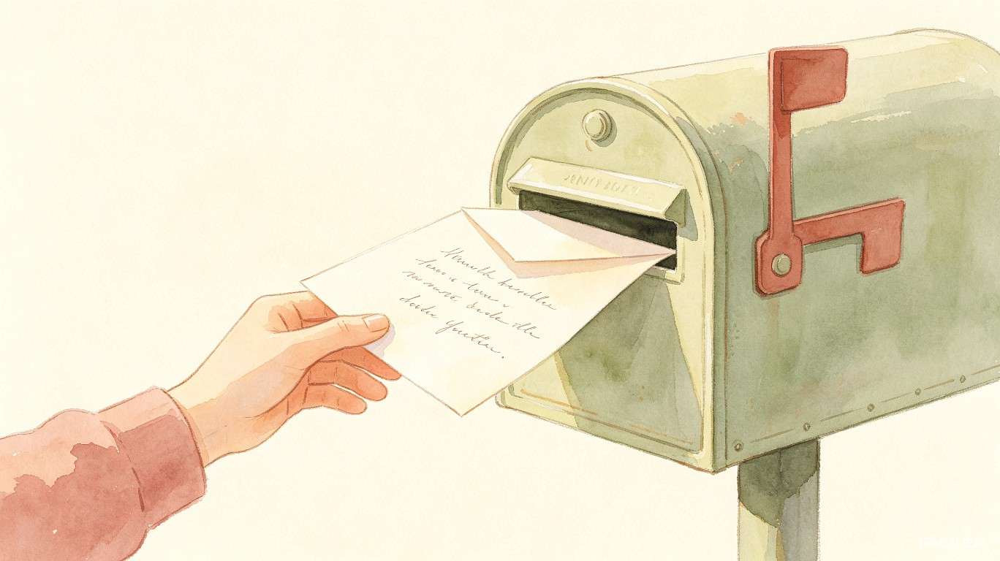

毕业季的散伙饭上，很多话到了嘴边又咽回去。想跟舍友说声「谢谢包容」，想跟朋友说句「常联系」，但微信发出去总觉得矫情，面对面又开不了口。有些话不说，可能这辈子都不会再有机会说了——我们缺一个「可以说话，但不用等回答」的地方。
留声笺是一个微信小程序，用户可以像「投信」一样，为特定的人或群体创建一封「留声笺」，写下那些当面说不出口的话。可以选择立即送达，也可以设定在未来的某个时间点自动解锁。对方会收到一个安静的提醒，点开就能看到，但不需要回复，也没有「已读」标记——只有存在，没有压力。
产品不做「大而全」的社交软件，而是做一个「安静的信箱」——平时藏在角落里，但你需要它的时候，它一定在，且绝不给你添乱。
| 维度 | 描述 |
|---|---|
| 年龄 | 18-26岁，以大学生和初入职场的年轻人为主 |
| 使用场景 | 毕业季、离别时刻、重要纪念日、情感表达需求强烈的节点 |
| 情感特征 | 有强烈的表达欲，但害怕尴尬、害怕被拒绝、害怕「已读不回」 |
| 技术熟练度 | 高，习惯使用微信小程序，对轻量级工具接受度高 |
| 使用频率 | 低频但高情感浓度，集中在毕业季、生日、纪念日等节点 |
凌晨两点，宿舍只剩自己还没睡。想对已经睡着的室友说点什么，但不想吵醒对方，也不想第二天面对面说。打开留声笺，写下一封定时在毕业典礼当天送达的信。
饭桌上大家笑着碰杯，但你知道有些话不适合在这个场合说。趁去洗手间的间隙，用手机快速写一封留声笺，设定在对方生日那天送达。
和朋友绕着操场走了十圈，聊了很多，但最想说的那句「谢谢你陪我度过最难过的大三」还是没说出口。回到宿舍，用留声笺补上这句话。
知道明天之后可能很久见不到面了，有些话再不说就真的没机会了。留声笺让这些话有一个安全的去处，不需要对方立刻回应，只需要「被听见」。
| 产品 | 定位 | 核心功能 | 与留声笺的差异 |
|---|---|---|---|
| 时间胶囊（各类App） | 给未来的自己写信 | 定时发送给自己，记录当下心情 | 面向「自己」而非「他人」，缺少人际情感连接 |
| 悄悄话/匿名社交App | 匿名表达、情感树洞 | 匿名发布、陌生人互动 | 缺乏「定向投递」的仪式感，且匿名容易滋生负面内容 |
| 微信「收藏」+ 备忘录 | 个人记录工具 | 记录文字，手动发送 | 没有定时送达能力，发送后仍需面对「已读」和回复压力 |
| Postcrossing（明信片交换） | 跨国明信片交换 | 随机匹配陌生人，寄送实体明信片 | 面向陌生人而非特定对象，且依赖实体邮寄 |
| # | 模块 | 功能描述 |
|---|---|---|
| 1 | 首页 | 展示用户已发送和已收到的留声笺列表，按时间排序；提供「写一封留声笺」的入口按钮；空状态引导 |
| 2 | 创建留声笺 | 填写收件人信息（手机号/微信好友/链接分享）、编辑正文内容、选择发送方式（立即发送/定时发送）、设定定时日期、预览与确认 |
| 3 | 接收留声笺 | 通过链接或小程序消息接收、查看留声笺内容、页面底部显示「对方已收到你的心意，无需回复」、提供「回一片笺」入口 |
| 4 | 我的留声笺 | 管理已发送的留声笺（查看状态、不可撤回）、查看已收到的留声笺、按时间筛选 |
| 5 | 举报与审核 | 接收者可一键举报不当内容、举报后人工复核被举报的单一留声笺、违规者封禁发送权限 |
业务逻辑：用户打开小程序 → 展示首页 → 已登录用户显示收发列表，未登录用户引导微信授权登录 → 列表按时间倒序排列，分为「我收到的」和「我发送的」两个标签页。
交互逻辑：点击「写一封留声笺」→ 进入创建流程；点击列表项 → 进入查看详情；空状态时显示引导文案和示例。
业务逻辑：用户填写收件人信息（可选手机号、微信好友选择、或生成公开链接）→ 编辑正文内容 → 选择发送方式（立即/定时）→ 如选择定时，弹出日期选择器（最早今天，最远5年后）→ 确认投递 → 系统生成留声笺记录，状态为「待发送」或「已发送」。
规则约束：正文字数限制 10-2000 字；收件人信息至少填一种（手机号/好友/生成链接）；定时发送日期不得早于当前时间；同一用户每天最多发送 10 封留声笺（防滥用）。
边界与异常：网络超时 → 保存草稿到本地，提示用户稍后重试；内容为空或超字数 → 实时提示，确认按钮置灰；定时日期非法 → 日期选择器限制可选范围。
业务逻辑：接收者通过链接或小程序消息进入 → 系统验证留声笺状态（未解锁则显示倒计时）→ 展示留声笺内容 → 页面底部固定显示「对方已收到你的心意，无需回复」→ 提供「回一片笺」入口。
交互逻辑：点击「回一片笺」→ 进入创建页面，收件人自动填充为原发送者 → 发送后原发送者收到新留声笺通知。
规则约束：留声笺内容不可复制、不可截图（前端做限制，非绝对安全）；接收者查看后不留「已读」标记；「回一片笺」不是回复原信，而是创建一封新的独立留声笺。
业务逻辑：展示用户所有发送和接收的留声笺记录 → 发送状态包括：待发送（定时）、已发送、已查看；接收状态包括：未解锁、已解锁、已查看。
规则约束：已发送的留声笺不可撤回、不可编辑、不可删除（产品核心原则：说出口的话不能收回）；接收的留声笺可删除本地记录，但不影响发送者的记录。
业务逻辑：接收者在查看页面点击「举报」→ 选择举报原因（骚扰/威胁/色情/其他）→ 提交后该留声笺进入人工复核队列 → 审核员仅能看到被举报的单一留声笺内容 → 判定违规后，封禁发送者的微信OpenID对应的发送权限。
规则约束：技术上不做主动内容审核（保护隐私底线）；举报必须附带原因；同一接收者对同一留声笺只能举报一次；严重违规者配合法律调查。
flowchart TD
A[打开小程序] --> B{已登录?}
B -->|否| C[微信授权登录]
B -->|是| D[首页]
C --> D
D --> E[写一封留声笺]
E --> F[填写收件人]
F --> G[编辑正文]
G --> H{发送方式}
H -->|立即| I[立即投递]
H -->|定时| J[选择日期]
J --> K[存入待发送队列]
I --> L[生成留声笺记录]
K --> L
L --> M[通知收件人]
M --> N{收件人查看}
N -->|通过链接| O[打开查看页]
N -->|通过小程序| O
O --> P{是否已解锁?}
P -->|否| Q[显示倒计时]
P -->|是| R[展示内容]
R --> S[底部提示: 无需回复]
S --> T{是否回笺?}
T -->|是| E
T -->|否| U[结束]
| 指标类型 | 指标名称 | 定义 | 目标值 |
|---|---|---|---|
| 北极星指标 | 留声笺投递数 | 成功创建并投递的留声笺总数 | MVP首月 1000+ |
| 过程指标 | 创建转化率 | 进入创建页 → 成功投递的比例 | ≥ 60% |
| 过程指标 | 定时发送占比 | 定时发送数 / 总发送数 | 观察值 |
| 过程指标 | 查看率 | 被查看的留声笺 / 总发送数 | ≥ 70% |
| 质量指标 | 回笺率 | 收到留声笺后选择「回一片笺」的比例 | 观察值 |
| 质量指标 | 举报率 | 被举报留声笺 / 总留声笺数 | < 0.5% |
| 留存指标 | 7日回访率 | 首次使用后7天内再次打开的用户比例 | ≥ 30% |
目标：验证核心假设——用户是否愿意在一个「无压力」的环境中写下私密话语。
目标：提升用户粘性和情感深度。
目标：扩展使用场景，从「毕业季」延伸到更多情感表达节点。
| 风险 | 概率 | 影响 | 应对策略 |
|---|---|---|---|
| 用户用完即走，留存极低 | 高 | 高 | 接受「低频高浓度」定位，不做强制留存；通过节日/纪念日提醒自然唤醒 |
| 内容违规（骚扰、威胁） | 中 | 高 | 举报-人工复核机制；后台绑定微信OpenID实名；严重违规封禁+法律配合 |
| 定时发送技术故障导致未送达 | 低 | 高 | 定时任务多重备份；异常告警；人工兜底补偿机制 |
| 小程序审核不通过 | 中 | 中 | 提前阅读微信小程序审核规范；避免匿名社交敏感词；强调「私密定向」而非「匿名社交」 |
| 用户误解为「匿名表白工具」 | 中 | 中 | 产品文案强调「留声笺」而非「匿名信」；引导正向情感表达 |
1. 安静优先：不推送、不打扰、不制造焦虑。通知文案克制，不给接收者压力。
2. 私密底线：平台不扫描内容，保护用户隐私。仅在举报触发时人工介入。
3. 不可撤回：说出口的话不能收回，这是留声笺的仪式感，也是产品的核心约束。
4. 无已读标记：不告诉发送者对方是否已读，消除「等待回复」的焦虑。
5. 小而美：不做社交裂变、不做feed流、不做排行榜。只做一件事：让说不出口的话有一个安全的去处。